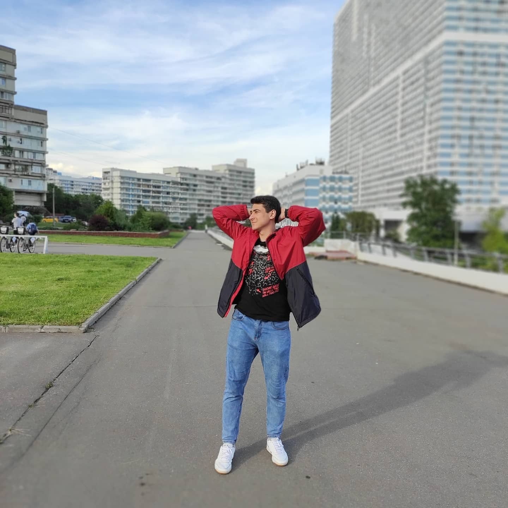

Р Е З Ю М Е
Акберов Артемий Ромазанович
Обо мне(ВКонтакте)
Образование
Среднее полное, неоконченное высшее. Текущие навыки и освоенные технологии (языки программирования, фреймворки): Имею общее представление об языках программирования: C, C++, C#, Python. Знаком с основными этапами разработки объектов Active X с помощью MFC, а также с помощью шаблонов библиотеки ATL. Знаком с основными принципами и технологиями создания и взаимодействия клиент-серверных приложений и имею навыки создания COM – сервера и COM – клиента. Знаком с СУБД MySQL и имею базовый навык работы в ней. Знаком с созданием простейших графических приложений, на базе создания своей игры. Знаком с основными паттернами проектирования. Знаком с основными способами синхронизации потоков(Mutex, Critical section, Semaphore). Имею первичное знакомство с .NET Framework.
Софт-скиллы
Умею работать в команде, коммуникабелен, самоорганизован, умею эффективно организовать свою работу и грамотно распоряжаться временем. Умею работать с информацией, искать её, анализировать, делать выводы. Готов учиться и узнавать новое.
Творчество
Photoshop Portfolio
Мои фотографии
